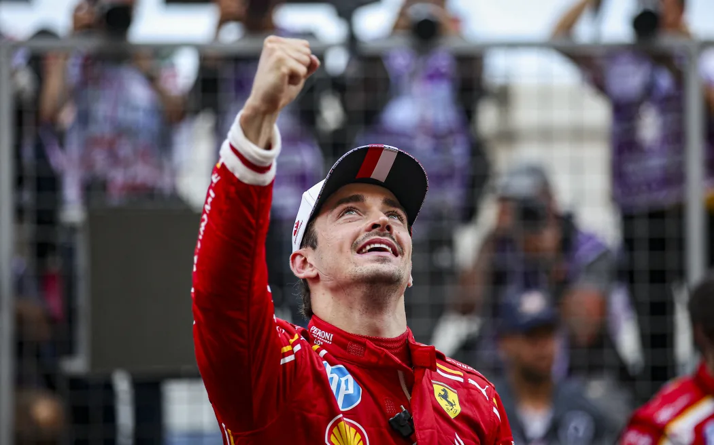

Monaco Grand Prix
78 laps. 3.337 km long. A race held on the streets of Monaco, highlighting elevation changes and tight corners.
Despite relatively low average speeds, the circuit is deemed dangerous and extremely demanding.

CHARLES LECLERC
FIRST MONEGASQUE DRIVER TO WIN IN 93 YEARS

Scuderia Ferrari had a dominant weekend, tallying 40 points.
Charles Leclerc finished P1 with Carlos Sainz at P3. Leclerc cuts the WDC gap to Verstappen
to 31 points.
In 2017, Charles Leclerc lost his father and in his final days, he told his father a white lie. That he'd made it to Formula 1;
that he'd signed the contract. It wasn't true then but his driving has made it true now, and look what he’s done with the opportunity.
The grandstands he saw built as a kid growing up now rise for him and for the first time in 93 years this fabled race is won by one of their own.
Charles Leclerc wins the Monaco grand prix to achieve his dream.
RECAP NEWSLETTER
Sign up to receive emails for all race weekends!